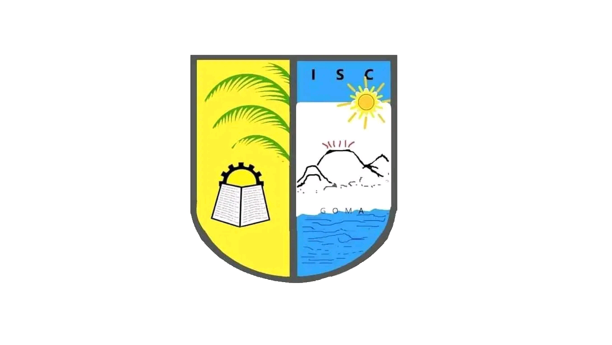

140, Av.Les écoles, Les Volcans, Nord-Kivu/RDC

ISC GOMA
HOME
INSTITUTION +
Organisation de l'ISC
Historique
Galerie
Blog
FORMATION +
Nos filières LMD
Nos filières Ancien système
Inscription en ligne
Connexion
CONTACT +
A PROPOS DE NOUS
REALISATEUR
BIENVENUE SUR NOTRE SITE
NOS FILIERES EN LMD
Nous avons 4 filières (LCF, LFDA, LM, LIG) en Licence
LICENCE EN COMPTABILITE ET FINANCE
La Licence en Comptabilité et Finance, LCF en sigle, est une formation de 1er cycle dans le Domaine des Sciences Economiques et de Gestion, Filière Gestion Commerciale et Administrative. Elle conduit au diplôme de Bachelor en Gestion Commerciale et Administrative, Mention Comptabilité et Finance ...
Voir plus
LICENCE EN MARKETING
La Licence en Marketing, LM en sigle, est une formation de 1er cycle dans le Domaine des Sciences Economiques et de Gestion, Filière Gestion Commerciale et Administrative. Elle conduit au diplôme de Bachelor en Gestion Commerciale et Administrative, Mention Marketing...
Voir plus
LICENCE EN FISCALITE, DOUANES ET ACCISES
La Licence en Fiscalité, Douanes et Accises, LFDA en sigle, est une formation de 1er cycle dans le Domaine des Sciences Economiques et de Gestion, Filière Gestion Commerciale et Administrative. Elle conduit au diplôme de Bachelor en Gestion Commerciale et Administrative, Mention Fiscalité, Douanes et Accises ...
Voir plus
LICENCE EN INFORMATIQUE DE GESTION
La Licence en Informatique de gestion, LIG en sigle, est une formation de 1er cycle dans le Domaine des Sciences Economiques et de Gestion, Filière Gestion Commerciale et Administrative. Elle conduit au diplôme de Bachelor en Gestion Commerciale et Administrative, Mention Informatique de Gestion. ...
Voir plus